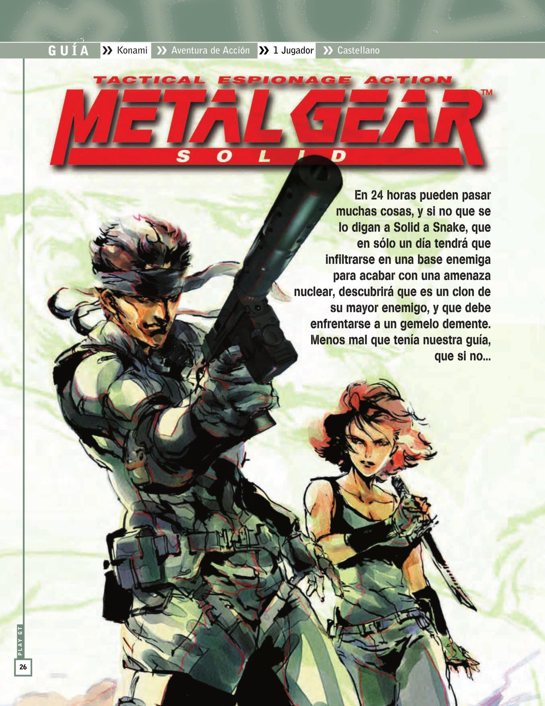
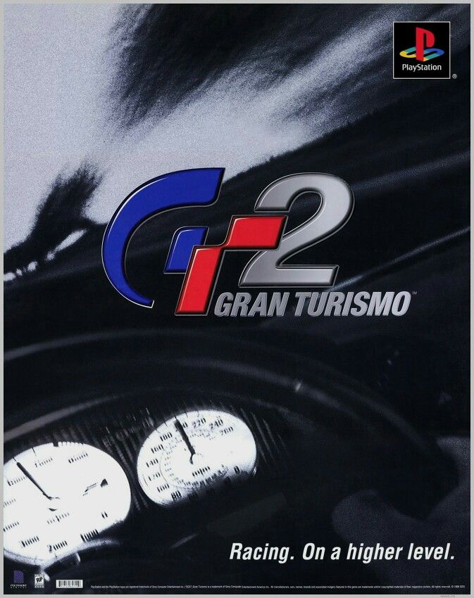
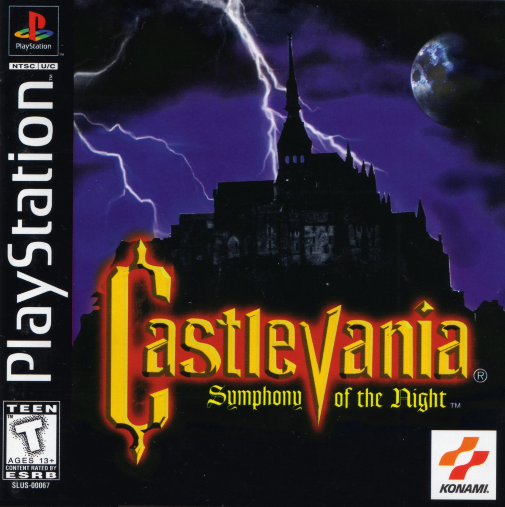
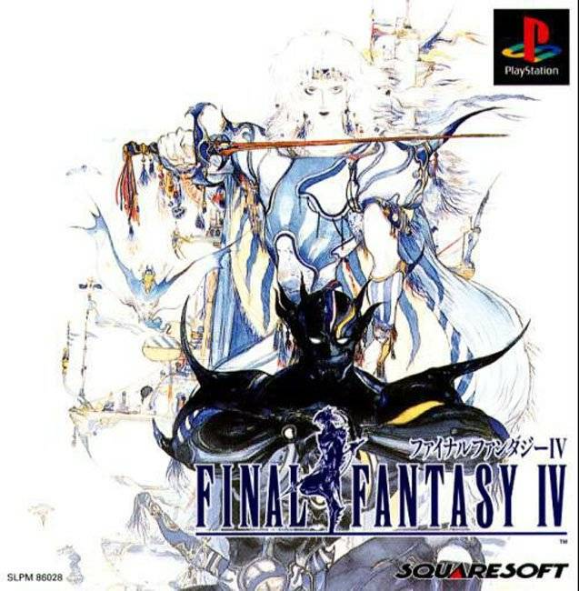
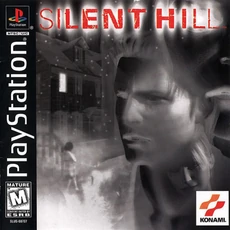

1: Metal Gear Solid

El equipo FOXHOUND se ha rebelado y ha tomado la base de Shadow Moses en Alaska para hacerse con el arma definitiva: Metal Gear. Solo Solid Snake puede salvar la
situación, para lo cual tendrá que infiltrarse y superar a enemigos como Revolver Ocelot, Vulcan Raven o Psycho Mantis.
2: Gran Turismo 2

Gran Turismo 2 es un videojuego de carreras para la PlayStation de Sony. Gran Turismo 2 fue desarrollado por Polyphony Digital y publicado por Sony Computer
Entertainment en 1999. Es la secuela de Gran Turismo.
3: Castlevania: Symphony of the Night

El Castlevania que cambió la saga para siempre, pese a que no fue muy bien recibido en su momento. Alucard, hijo de Drácula, tiene que internarse en el castillo
de su padre para acabar con él. Adoptando la estructura de juegos como Metroid.
4: Final Fantasy IX

Final Fantasy vuelve a los reinos de fantasía medieval con esta novena entrega, que vuelve a combinar exploración, combates por turnos y espectaculares cinemáticas
generadas por ordenador. Yitán, el protagonista, se verá envuelto en el secuestro de una princesa.
5: Silent Hill

Silent Hill es un videojuego de terror publicado por Konami y desarrollado por Team Silent, un grupo de Konami Computer Entertainment Tokyo. Fue lanzado para
PlayStation en Norteamérica en enero de 1999.